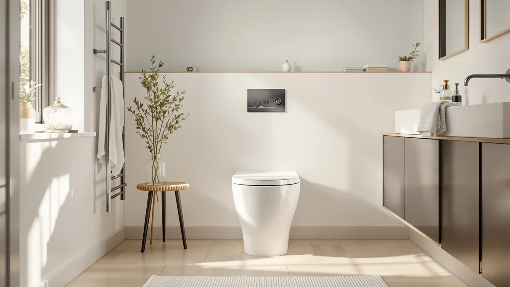

Best One Piece Toilet Under 500 (2026)
Prices and picks verified as of September 2026. Independent, reader-supported reviews.


Quick Answer
The best one piece toilet under 500 pairs a comfort-height elongated bowl with a real dual-flush system, not a low price tag alone. We compared seven models between $189.99 and $249.99 on flush type, rough-in, and included hardware, and the EliteEdge One-Piece Toilet for Bathroom Comfort at $219.99 comes out on top for most bathrooms.
Our pick: One-Piece Toilet for Bathroom Comfort, $219.99 Check Price on Amazon
Bottom line: our top pick is the One-Piece Toilet for Bathroom at $288.45. The best budget option is the Sonderzone Elongated One Piece Toilet for Bathroom at $189.99.
Things to Know Before You Buy
- Under $500 buys real comfort-height and dual-flush features, not a stripped-down base model. All seven picks here land between $189.99 and $249.99, and most include an ADA-style 17 to 17.5-inch comfort seat and a two-button dual-flush system.
- GPF numbers only matter with the right flush type behind them. A siphon jet flush with a MAP rating of 1000 grams, like the Casta Diva and Sonderzone models here, clears solid waste in one flush at a lower gallon count than a basic gravity flush handling the same job.
- Almost everything on this list needs a 12-inch rough-in. That is the standard distance from the wall to the floor bolts in US homes, and six of the seven toilets here are built for it. Measure yours before you order.
- Seat inclusion is not consistent across listings. The EliteEdge and Sonderzone toilets ship with a soft-close seat in the box; some of the Casta Diva listings do not spell that out, so confirm before checkout if a separate seat purchase would strain your budget.
- Flush mechanism varies more than the price tag suggests. Most of these toilets use a standard dual-flush button, but one Casta Diva model at $249.99 runs an air-pressure assisted, foot-kick or side-button flush instead, a notably different mechanism worth knowing about before you commit.
The best one piece toilet under 500 gets you a comfort-height seat, a dual-flush system that clears the bowl in one try, and a seamless shell with no gap to scrub, without pushing into designer pricing. We compared seven models that stay under that ceiling, priced from $189.99 to $249.99, and checked the flush type, rough-in, seat height, and included hardware that separate a toilet you will like from one you will regret installing.
Our pick for most bathrooms is the EliteEdge One-Piece Toilet for Bathroom Comfort at $219.99. It pairs a 16-inch comfort-height elongated bowl with a soft-close seat and an under-locking lid that will not slam, and its press-flush mechanism clears the bowl without the fuss some of the competition here has. If you need a smaller footprint or want to spend even less, several of the other six picks below cost under $230 too, so there is room to trade one feature for a lower price.
Every toilet on this list is a one-piece design, dual flush where the mechanism allows for it, and built for a standard 12-inch rough-in unless we note otherwise below. Before you buy, measure your own rough-in (our one-piece toilet buying guide walks through how) and confirm whether the seat ships in the box, since that detail varies between these seven listings even at similar prices.
Why You Should Trust Us
This guide is written and maintained by Ilane Tall, who has spent years comparing bathroom fixtures on the specs that predict day-one satisfaction rather than on marketing copy. We do not run a fake testing lab, and none of these seven toilets passed through our hands before publication. What we do is read every listing and manufacturer feature sheet line by line, cross-check flush type, GPF rating, rough-in, and seat height against the product images, and flag anything a buyer would need to know before checkout, like a missing seat or a nonstandard flush mechanism. Our Amazon commissions never change which toilet we put first.
How We Picked
We started with every one-piece toilet in our database priced under $500 and narrowed the field using a few rules. We required a stated flush type, whether siphon jet, gravity, or the air-pressure assisted design on one of the Casta Diva models, so buyers know what they are actually purchasing rather than guessing. We prioritized listings with an ADA-style comfort height (typically 16.5 to 17.5 inches), an elongated bowl, and a documented dual-flush GPF rating, since those three features do the most to make a toilet comfortable and efficient in daily use. We also kept the price spread wide on purpose, from $189.99 to $249.99, so shoppers at either end of the under-$500 range have a real option among the best one piece toilet under 500 candidates we reviewed.
How We Compared
Because a toilet is judged on a handful of measurable things, we built our comparison around them. For each model we recorded flush type and GPF numbers, MAP rating where the manufacturer publishes one, rough-in size, seat height, and whether a seat ships in the box. We compared those figures against what a typical household actually needs, then checked manufacturer feature sheets and product photos for details that only show up on close inspection, like an under-locking lid or side access holes for easier bolt installation. A toilet that looks nearly identical to another in a thumbnail often differs meaningfully on flush mechanism or included hardware, and that is where these seven picks separate from each other and from the models we left off this list.
Our Picks

One-Piece Toilet for Bathroom Comfort
What we like
- 16-inch comfort height and elongated bowl make sitting and standing easier
- Soft-close seat included, so there is nothing extra to buy
- Under-locking lid stops accidental slamming
- Ceramic construction and a press-flush mechanism built for daily use
Flaws but not dealbreakers
- The manufacturer does not publish a specific GPF number, so exact water use per flush is unclear
- No published rough-in figure, so measure your existing setup before ordering
| Material | — |
| Size | 16" H & Dual Flush & Elongated |
The EliteEdge One-Piece Toilet for Bathroom Comfort is our pick for most bathrooms shopping for the best one piece toilet under 500, and it earns that spot by bundling in features other brands charge extra for. The 16-inch comfort height and elongated bowl match what pricier toilets offer, and the soft-close seat comes standard instead of showing up as a separate line item. EliteEdge also builds in an under-locking lid, a small detail that stops the seat from slamming down and cracking over time, something cheaper toilets in this price range often skip.
Inside, a press-flush mechanism drives a 360-degree clean around the bowl, and the manufacturer lists ceramic construction for the shell. The trade-off is transparency: EliteEdge does not publish a GPF rating or rough-in figure the way several of the Casta Diva and Sonderzone listings do, so you are trusting the brand's flush claims a little more than the others on this page. At $219.99, it ties for the second-lowest price here, and the included hardware is what makes it the one we would point a first-time buyer toward.

Casta Diva One Piece Toilet
What we like
- 17.5-inch ADA comfort height and elongated bowl
- Siphon jet flush with a published MAP rating of 1000 grams
- Dual flush at 1.0/1.28 GPF meets WaterSense criteria
- 12-inch rough-in stated up front, so you know it fits before ordering
Flaws but not dealbreakers
- At $221.84 it costs a little more than our top pick without a clear upgrade in return
- The listing does not specify seat material or confirm a soft-close seat is included
| Material | — |
| Size | — |
The Casta Diva One Piece Toilet lands a couple of dollars above our top pick at $221.84, and the case for it comes down to documentation. Where the EliteEdge asks you to trust general flush claims, Casta Diva publishes a MAP rating of 1000 grams on its siphon jet flush and a dual-flush spec of 1.0 GPF for liquids and 1.28 GPF for solids, figures that qualify for WaterSense certification and translate to real water savings; the brand claims up to 16,500 gallons a year compared with an older 3.5-gallon toilet.
It also states its rough-in outright: a standard 12 inches, so you can confirm fit before you buy instead of measuring against a blank size field. The 17.5-inch ADA comfort height and elongated bowl put it in the same comfort class as our top pick. The gap between the two comes down to price and a few unknowns elsewhere. Casta Diva does not spell out whether a soft-close seat ships in the box, so budget a few extra dollars for one if the listing photos do not confirm it by the time you check out.

HOROW T0338W Compact One Piece
What we like
- Compact footprint (26.6" D x 15" W x 26" H) fits tight bathrooms
- 17.3-inch ADA chair height for easier sitting and standing
- Siphon flush with a fully-glazed 2-inch trapway
- 12-inch rough-in and dual flush 1.1/1.6 GPF both confirmed by HOROW
Flaws but not dealbreakers
- At $229.00 it is the second-most expensive pick under $230
- The compact shell means less bowl depth than the elongated Casta Diva models
| Material | — |
| Size | 12" Rough-in |
HOROW built the T0338W around bathrooms where every inch counts, and it is the only toilet on this list with published exterior dimensions: 26.6 inches deep, 15 inches wide, and 26 inches tall. If you are replacing a toilet in a small powder room or a tight rental bathroom, that compact footprint combined with a 17.3-inch ADA chair height makes this the pick worth measuring for first. Our full HOROW T0338W review covers the fit in more detail.
The flush side holds up despite the smaller shell. HOROW pairs siphon flushing with a fully-glazed 2-inch trapway and a dual-flush rating of 1.1 GPF for liquids and 1.6 GPF for solids, so a compact bowl does not mean a weak flush. At $229.00 it costs about $9 more than our top pick, and the trade-off for that compact size is a bowl with less overall depth than the elongated Casta Diva models here, worth keeping in mind if the people using it are tall.

Casta Diva Elongated One Piece
What we like
- Skirted one-piece design integrates tank and bowl with no leak-prone seam
- 17-inch ADA comfort height and elongated bowl
- Siphon flush with a MAP rating of 1000 grams
- Dual flush 1.1/1.6 GPF meets WaterSense criteria
Flaws but not dealbreakers
- Ties for the lowest price on this list but publishes no seat-inclusion detail
- No stated exterior dimensions, so compact-bathroom shoppers should compare it against the HOROW
| Material | — |
| Size | — |
This Casta Diva model matches our top pick's $219.99 price exactly, and its argument is the skirted, seamless design: the tank and bowl are integrated into one shell with no seam where the two would normally meet, which Casta Diva markets as eliminating the leaking-tank problem that shows up on some two-piece and value one-piece toilets. The 17-inch ADA comfort height and elongated bowl put it in line with the rest of the comfort-height picks here.
On the flush side, it uses the same siphon jet system as its sibling above, rated for a MAP score of 1000 grams, with a dual-flush spec of 1.1 GPF for liquids and 1.6 GPF for solids that meets WaterSense criteria. What Casta Diva does not spell out is whether a seat ships in the box or what the exterior footprint measures, so if either of those matters for your bathroom, compare it against the HOROW's published dimensions before you decide.

Sonderzone Elongated One Piece Toilet
What we like
- Cheapest option at $189.99, roughly $30 less than the next lowest pick
- Soft-close seat confirmed included, unlike several Casta Diva listings
- 17.3-inch ADA comfort height
- Large side access holes make floor bolt installation easier
Flaws but not dealbreakers
- Sonderzone is a less established name than HOROW or Casta Diva, with a thinner track record
- The listing does not explicitly name the flush mechanism (siphon versus gravity) even though it states a MAP 1000g rating
| Material | — |
| Size | — |
At $189.99, the Sonderzone Elongated One Piece Toilet is priced about $30 below the next cheapest option here and roughly $30 under our top pick, without giving up the comfort-height features that matter most. It carries a 17.3-inch ADA comfort height, an elongated bowl, and a dual-flush rating of 1.1 GPF for liquids and 1.6 GPF for solids backed by a stated MAP score of 1000 grams, numbers that hold up against toilets costing considerably more.
Sonderzone also confirms a soft-close seat ships in the box, which only the EliteEdge among the other six picks spells out as clearly, and it adds large side access holes designed to make floor bolt installation less of a fight during a DIY swap. The trade-off is brand recognition: Sonderzone has a shorter track record than HOROW or Casta Diva, and its listing does not name the flush mechanism the way the Casta Diva models do. For the price, it is the pick we would choose for a rental or a guest bathroom on a tight budget. If your ceiling is even lower, our best one-piece toilets under $300 guide covers more options in that range.

Casta Diva Elongated One Piece
What we like
- Foot-kick or side-button flush, useful for hands-free, hygienic use
- Air-pressure assisted 1.0 GPF flush works without electricity
- 17.2-inch ADA comfort height
- Built for low-water-pressure supply lines where standard flushes can struggle
Flaws but not dealbreakers
- At $249.99 it ties for the most expensive pick on this list
- A single 1.0 GPF flush setting means no separate low-volume option for liquids only
| Material | — |
| Size | — |
This Casta Diva model breaks from the dual-flush format the other six picks use. Instead of two buttons, it runs an air-pressure assisted system rated at 1.0 GPF that you trigger with a foot kick or a side button, a different mechanism built into the tank rather than one relying on gravity or a siphon jet. Casta Diva markets it as working reliably even on a low-pressure supply line, and the foot-kick option means you do not have to touch the flush mechanism by hand.
It shares the 17.2-inch ADA comfort height and 12-inch rough-in of its siblings, and at $249.99 it ties for the highest price on this list alongside the golden-button model below. Because it runs a single 1.0 GPF flush rather than a dual-flush split, you lose the option to send extra water for solids the way the other Casta Diva listings allow, so it suits buyers who prioritize the hands-free mechanism over trimming the flush volume for liquids.

Casta Diva Elongated One Piece
What we like
- Documented compact dimensions (25.39" D x 14.56" W x 26.57" H)
- 17.5-inch ADA comfort height and elongated bowl
- Siphon jet flush with a MAP rating of 1000 grams
- Dual flush 1.0/1.28 GPF, with a distinct golden flush button finish
Flaws but not dealbreakers
- Ties for the highest price on this list at $249.99
- The golden button is a cosmetic difference, not a functional upgrade over the standard Casta Diva models
| Material | — |
| Size | — |
The last pick on this list is another Casta Diva, distinguished mainly by a golden flush button instead of the standard chrome or silver finish, and by being the only listing here besides the HOROW that publishes exact exterior dimensions: 25.39 inches deep, 14.56 inches wide, and 26.57 inches tall. That makes it a second option for buyers who want to confirm a toilet will actually clear their bathroom's floor space before ordering. Our Casta Diva Elongated review has more on how it looks in place.
Underneath the finish, it runs the same siphon jet flush as the other Casta Diva models, rated at MAP 1000 grams, with a dual-flush spec of 1.0 GPF for liquids and 1.28 GPF for solids that meets WaterSense criteria, and a 17.5-inch ADA comfort height. At $249.99 it costs the same as the foot-kick Casta Diva above, so the decision between the two comes down to whether you want a hands-free flush mechanism or a documented footprint with a distinctive gold accent.
Quick Comparison
| Product | Material | Price | Rating | Best for | Get it |
|---|---|---|---|---|---|
| One-Piece Toilet for Bathroom Comfort | — | $219.99 | 4 | Most bathrooms, all-in-one comfort package | View on Amazon → |
| Casta Diva One Piece Toilet | — | $221.84 | 4 | Documented flush ratings | View on Amazon → |
| HOROW T0338W Compact One Piece | — | $229.00 | 4 | Small bathrooms, compact footprint | View on Amazon → |
| Casta Diva Elongated One Piece | — | $219.99 | 4 | Seamless skirted design | View on Amazon → |
| Sonderzone Elongated One Piece Toilet | — | $189.99 | 4 | Tightest budgets | View on Amazon → |
| Casta Diva Elongated One Piece | — | $249.99 | 4 | Hands-free foot-kick flush | View on Amazon → |
| Casta Diva Elongated One Piece | — | $249.99 | 4 | Compact dimensions, cosmetic upgrade | View on Amazon → |
The Competition
We looked at more than seven one-piece toilets priced under $500 before narrowing the list down. Several listings advertised a dual-flush GPF rating but left out any MAP or flush-mechanism detail, which made it impossible to judge whether the bowl would clear in one flush or two. A handful of designer-styled imports crept close to the $500 ceiling without publishing rough-in or seat-height specs, so we could not confirm they would even fit a standard US bathroom. We also passed on a few generic-brand toilets with no manufacturer-published features beyond a stock photo and a price, since a toilet you cannot research ahead of time is not one we recommend, regardless of how cheap it looks. The seven models above are the ones that paired a documented flush spec with a comfort-height seat and a price that stayed clearly under budget.
Frequently Asked Questions
What is the best one piece toilet under 500 for most bathrooms?
Based on our comparison, the EliteEdge One-Piece Toilet for Bathroom Comfort is the best one piece toilet under 500 for most bathrooms. At $219.99, it bundles a 16-inch comfort-height elongated bowl, a soft-close seat, and an under-locking lid into one price, without leaving out major features the way some of the Casta Diva listings do on seat inclusion.
Do all one-piece toilets under $500 use the same rough-in size?
Not all of them. Six of the seven toilets we compared use a standard 12-inch rough-in, the distance from the finished wall to the center of the floor bolts, but the EliteEdge pick does not publish that figure. Measure your existing rough-in before ordering any toilet (see our guide to measuring a rough-in), since the wrong size keeps the tank from sitting flush against the wall.
Is a dual-flush toilet worth it in this price range?
Yes, and five of the seven picks here include one. A dual-flush system uses a smaller volume, typically 1.0 to 1.1 GPF, for liquid waste and a larger volume, usually 1.28 to 1.6 GPF, for solids, which can meaningfully cut water use over a year compared with a single-flush toilet rated at a flat 1.6 gallons. The exception on this list is the Casta Diva with the air-pressure assisted foot-kick flush, which runs a single 1.0 GPF setting instead.